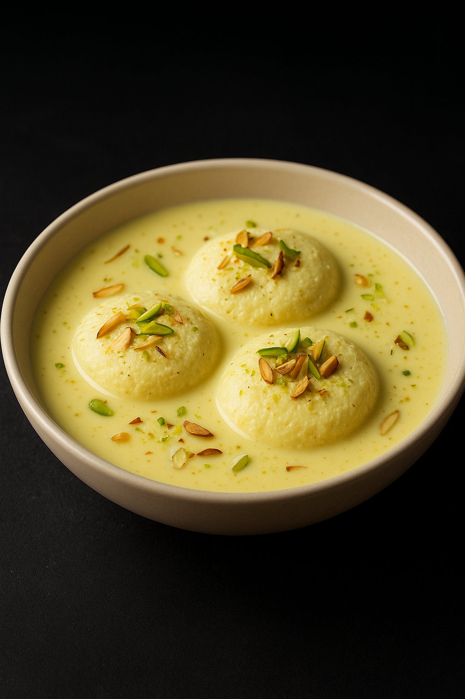

RasMalai

Home
Description
Rasmalai is a royal Bengali dessert made of soft paneer balls soaked in thick, creamy milk flavored with cardamom and saffron. It’s rich, aromatic, and melts in your mouth with every bite. This dish is often served chilled, making it a perfect treat for festive occasions and celebrations.
The name Rasmalai literally means “juice” (ras) and “cream” (malai), and true to its name, it’s bursting with sweet, milky goodness. Whether served after a grand meal or as a surprise indulgence, Rasmalai never fails to impress.
Ingredients
- 1 liter full-fat milk (for panner)
- 1 liter milk (for rabri)
- 2–3 tbsp lemon juice or vinegar
- ¾ cup sugar
- ½ tsp cardamom powder
- Few strands saffron
- Chopped pistachios & almonds for garnish
Steps
- Boil 1 liter of milk, add lemon juice to curdle it, and drain to get paneer (chenna).
- Knead chenna until smooth, shape into small discs.
- Boil water with sugar, cook the discs until spongy.
- In another pot, boil 1 liter milk until reduced, add saffron, cardamom, and sugar.
- Squeeze cooked discs gently, place in the thickened milk.
- Chill and garnish with nuts before serving.